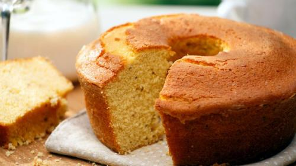

BOMBOM DE TRAVESSA


INGREDIENTES
- 250 g de chocolate ao leite
- 250 g de chocolate meio amargo/LI>
- 2 latas de leite condensado
- 2 latas de creme de leite
- 2 colheres de margarina
- 2 caixas de morango
MODO DE PREPARO
- Coloque as latas de leite condensado em uma panela com a manteiga e faça uma massa como um brigadeiro mole
- Coloque em uma travessa e, por cima deste brigadeiro mole, coloque os morangos cortados ao meio.
- Reserve para fazer a cobertura.
- Para fazer a cobertura, rale o chocolate ao leite e o meio amargo e misture ao creme de leite.
- Misture e coloque no micro-ondas durante 1 minuto.
- Retire e mexa
